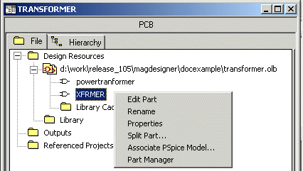

9
This chapter provides you an overview of steps involved in using Magnetic Parts Editor generated PSpice models in your schematic design.
To be able to use the transformer models generated by Magnetic Parts Editor, you need to complete the steps listed below.
The model-symbol association can be done in two ways. First, is when you have a symbol and want to associate a model to it. Second, is when you have a model and you need to look for a symbol to be associated with that model. For the first scenario, where you have a symbol and need to associate a model to it, you use OrCAD Capture, whereas for the second method you use Model Editor.
Using Model Editor, you can attach symbols to a single model or to all the models in the PSpice library. Model Editor provides you two methods for associating symbols to your models. These are:
Model Editor will create symbols for all the models in the specified PSpice library.
To know more about associating symbols in the batch mode, see Creating parts for models chapter of PSpice User's Guide.
In the interactive mode of part creation, you can view the shape of the symbol being associated with a PSpice model. If required you can specify a different symbol.
Model Editor will create symbols for all the models in the specified PSpice library.
To know more about associating symbols in interactive mode, see Creating parts for models chapter of PSpice User's Guide.
This flow is useful when you create a transformer symbol in Capture and then associate the transformer model generated by Magnetic Parts Editor to the new symbol.
Note: Alternatively, right-click on the symbol name and from the pop-up menu, choose Associate PSpice Model.
The required PSpice model is now associated with the PSpice symbol. You can now use this symbol in your schematic design to simulate the transformer behavior.
This example describes the steps required to associate a symbol to a Magnetic Parts Editor generated PSpice model using Model Editor. In this example, the PSpice model for the power transformer with two secondary windings will be associated to a Capture symbol, XFRMER, using the interactive mode of operation. The Capture symbol was created by copying the XFRM_NONLIN/CT-SEC part from BREAKOUT.OLB and is saved in TRANSFORMER.OLB.
To associate an existing Capture symbol, XFRMER from to the generated PSpice model, PWRXMER.
The symbol XFRMER is not associated with the PWRXMER PSpice model.
This example explains the steps required to associate the Magnetic Parts Editor generated PSpice model for the power transformer with two secondary windings, to a Capture symbol, XFRMER. The Capture symbol was created by copying the XFRM_NONLIN/CT-SEC part from BREAKOUT.OLB and is saved in the TRANSFORMER.OLB.
Note: Alternatively, right-click on the symbol name and from the pop-up menu, choose Associate PSpice Model.

You have successfully associated the PSpice model to the Capture symbol.
When you use the PSpice model of a transformer, generated by Magnetic Parts Editor in a circuit, you can view the B-H curve for the transformer in the Probe window. Magnetic Parts Editor generates a .SUBCKT model for the transformer. To display the B-H curve for the designed transformer in the Probe window, complete the steps listed below.
To display the B-H curve, complete the steps listed below.
Note: The variable H will be available in the Simulation Output Variables list only if the Subcircuit Nodes check box is selected. By default, this check box will be enabled and selected only when the design contains a .SUBCKT model and the data collection option is set to All.
Note: The variable B will be available in the Simulation Output Variables list only if the Subcircuit Nodes check box is enabled and selected.
In this chapter, you learnt how to use Magnetic Parts Editor generated symbol for a transformer or a DC inductor in a schematic design. Table 9-1 lists the concise steps to be followed, before you can use the PSpice models generated by Magnetic Parts Editor, in your schematic designs.